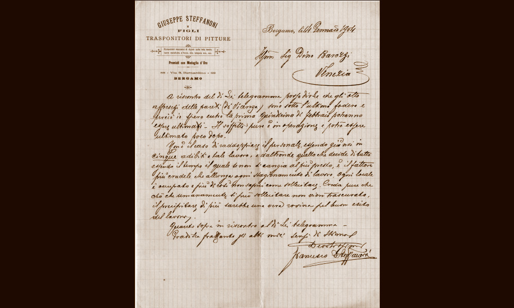

Steffanoni
Bergamo, entità attiva dal 1878 al 1987

- PERSONE
- Giuseppe Steffanoni, 1841–1902, antiquario
Francesco/Franco Steffanoni, 1870–1942, antiquario
Attilio Steffanoni, 1881–1947, antiquario
Attilio Steffanoni, 1938–2025, antiquario
Franco Steffanoni, 1907–1987, antiquario - INSEGNE
- Fratelli Steffanoni-Belle Arti-Bergamo
Giuseppe Steffanoni & figli, Trasponitori di pitture - IN CATALOGO
- Opere transitate, catalogo della Fondazione Zeri →
La bottega di restauro Steffanoni viene fondata poco prima del 1880 a Bergamo da Giuseppe, al quale negli anni seguenti si affiancano i due figli Franco e Attilio, nati rispettivamente nel 1870 e 1881, che insieme portano avanti l’attività paterna sotto l’insegna “Fratelli Steffanoni-Belle Arti-Bergamo” e quindi “Giuseppe Steffanoni e figli, trasponitori di pitture. Ristauratori meccanici di dipinti sulla tela, tavole, lastre metalliche, a fresco, olio, tempera, ecc., ecc. (premiati con medaglia d’oro)”.
Giuseppe risulta già attivo nel 1878, quando, insieme al restauratore Antonio Zanchi, di cui era stato allievo, viene incaricato dall’Accademia di Belle Arti di Brera di ripulire dallo scialbo, staccare e trasporre su tela alcuni affreschi del Bergognone che versavano in condizioni critiche nel transetto nella chiesa di San Satiro a Milano, raffiguranti Santa Caterina d’Alessandria, S. Maria Maddalena e Santa Marta. I due restauratori, a partire dal 1883, collaborano anche per i lavori di recupero degli affreschi quattrocenteschi dei fratelli Zavattari nella cappella di Teodolinda del Duomo di Monza che, dopo la morte di Zanchi, saranno portati a termine da Giuseppe nel 1889. Dal 1884 al 1901, Giuseppe collabora spesso con i fratelli Mora, esperti intagliatori, ebanisti e stuccatori, bergamaschi come lui in attività di foderatura, stuccatura e pulitura su dipinti.
L’attività della famiglia lombarda si concentrò tuttavia in Veneto e in particolare a Venezia, centro fondamentale del mercato dell’arte, dove venivano chiamati restauratori specializzati nel distacco di interi cicli di affreschi dalle sale dei palazzi cittadini o delle ville di campagna dell’entroterra lagunare, un’operazione che necessitava di grande perizia tecnica e tempestività. La Ditta Steffanoni era la prediletta dai principali antiquari veneziani attivi tra la fine dell’Ottocento e i primi decenni del Novecento.
Il conte antiquario Dino Barozzi nel 1893 affidò loro lo stacco e il trasporto su tela degli affreschi di Giambattista Tiepolo – pari a 100 mq di superficie - eseguiti a villa Contarini a Mira, che furono acquistati dai coniugi Jacquemart-Andrè per il proprio palazzo parigino. Gli affreschi, avvolti su rulli lunghi 25 metri, furono trasferiti a Parigi per ferrovia, dove arrivarono nell'autunno dello stesso anno.
Antonio Carrer, nel 1897, collaborò con gli Steffanoni per un’analoga delicata operazione per il distacco e il trasporto su tela di ventidue affreschi monocromi su fondo dorato dipinti nel 1754 da Giambattista e Domenico Tiepolo per La stanza dei satiri di palazzo Volpato Panigai a Nervesa della Battaglia, che furono acquistati da Wilhelm Bode per il Kaiser-Friedrich Museum di Berlino. Infine, Antonio Salvadori, nel 1906, si rivolse alla ditta di Giuseppe e dei figli per lo stacco e il trasporto dei dipinti eseguiti da Giambattista Tiepolo per la villa di famiglia a Zianigo, oggi esposti nelle sale di Cà Rezzonico sul Canal Grande.
Tra il 1908 e il 1928 Franco è impegnato in importanti interventi di restauro sui dipinti della Pinacoteca Civica di Vicenza e nella basilica di Santa Maria Maggiore a Bergamo. Oltre ad essere uno stimato restauratore, insieme al fratello Attilio, è anche un appassionato collezionista, tra le opere passate nelle loro raccolte ricordiamo Una Madonna col Bambino di Giovanni Bellini, il Ritratto del conte Gerolamo Colloredo Mansfeld, attribuito ad Alessandro Magnasco, un’accattivante scena mitologica con Venere e Marte di Antonio Bellucci, oltre a numerose nature morte di Felice Boselli.
L’ultimo erede Attilio, artista incisore scomparso nel 2025, ha deciso di donare l’archivio di famiglia all’Accademia Carrara di Bergamo. Vi sono conservati la documentazione tecnica e contabile della ditta, inclusi i libri dei conti, che sono in attesa di inventariazione. La studiosa Cristina Giannini negli anni scorsi ha effettuato una copia dei materiali documentari che ha suddiviso in dieci faldoni.
Altri antiquari
Collaboratori
- Antonio Zanchi (restauratore)
- Arturo Cividini (restauratore)
- Benno Geiger (antiquario)
- Bernard Berenson (storico dell'arte)
- Cesare Laurenti (pittore)
- Giuseppe Fiocco (storico dell'arte)
- Luigi Cavenaghi (restauratore)
- Luigi Cavenaghi (restauratore)
- Paul Cassirer (antiquario)
- Roberto Longhi (storico dell'arte)
- Ugo Frizzoni (storico dell'arte)
- Ugo Frizzoni (storico dell'arte)
- Wart Arslan (storico dell'arte)
Eventi significativi nell'attività antiquariale
- 1878 - Restauro nella chiesa di S. Satiro a Milano: Giuseppe Steffanoni, allievo del restauratore Antonio Zanchi, collabora con lui per il distacco degli affreschi del Bergognone dal transetto destro della chiesa di San Satiro a Milano
- 1883-1889 - Restauro nella cappella di Teodolinda nel Duomo di Monza: Giuseppe, dopo la morte di Zanchi, porta avanti i lavori di restauro sugli affreschi dei fratelli Zavattari nella cappella di Teodolinda del Duomo di Monza
- 1893 - Distacco di affreschi di Tiepolo: La ditta Steffanoni si occupa del distacco e trasporto su tela degli affreschi di Giambattista Tiepolo nella villa Contarini a Mira, collaborazione con Dino Barozzi
- 1897 - Distacco di affreschi di Tiepolo: La ditta Steffanoni si occupa del distacco e trasporto su tela di ventidue affreschi monocromi su fondo dorato dipinti nel 1754 da Giambattista e Domenico Tiepolo per La stanza dei satiri di palazzo Volpato Panigai a Nervesa della Battaglia, collaborazione con Antonio Carrer
- 1900 - Restauro degli affreschi di Tiepolo a Udine: Giuseppe Steffanoni restaura gli affreschi di Giambattista Tiepolo nel Palazzo Arcivescovile di Udine
- 1908-1928 - Restauri a dipinti della Pinacoteca Civica di Vicenza: Franco si occupa del restauro dei dipinti della Pinacoteca civica di Vicenza e di alcuni interventi nella cattedrale di Santa Maria Maggiore di Bergamo
- 1987 - Chiusura della Ditta Steffanoni: La ditta di restauro Steffanoni chiude definitivamente
- 2024 - Donazione dell'archivio Steffanoni: Attilio Steffanoni dona l’archivio di famiglia all’Accademia Carrara di Bergamo
Bibliografia essenziale
- Gardner, E.E. (2019), A Bibliographical Repertory of Italian Private Collections, Verona, Scripta Edizioni
- Giannini, C. (1998), Affreschi di Giovan Battista Tiepolo: dalle ville venete alle residenze europee. Proprietari, restauratori, clienti, Venezia, Il Poligrafo, pp. 313-319
- Giannini, C. (2002), L’attimo fuggente. Storie di collezionisti e mercanti, Bergamo, Lubrina Bramani Editore
- Giannini, C. (2002), L’attimo fuggente: storie di collezionisti e mercanti, Bergamo, Lubrina
- Giannini, C. (2011), Attilio Steffanoni, restauratore e antiquario. Un diario inedito, Milano, Segrate, pp. 205-216
- Giannini, F. (2017), Franco Steffanoni per Gian Battista Tiepolo. Frammenti di lettere famigliari, Firenze
- Künzel, F., Götze, B. (1995), Verzeichnis des schriftlichen Nachlasses von Wilhelm von Bode, Berlino, Zentralarchiv, Staatliche Museen zu Berlin Preußischer Kulturbesitz
- Rinaldi, S. (2021), Il restauratore Giuseppe Steffanoni al servizio dei Fratelli Mora (1884-1901), in «Rivista dell’Osservatorio per le arti decorative in Italia», 24, pp. 79-88
- Rinaldi, S. (2022), I restauri di Franco Steffanoni sui dipinti della Pinacoteca comunale di Vicenza (1908-1928), in «Predella», 51, pp. 47-73, tavv. XIII-XVIII
- Rinaldi, S. (2025), L'archivio digitale dei restauratori Steffanoni di Bergamo (1883-1947), in «Rivista dell'Istituto nazionale di archeologia e storia dell'arte», XLVIII, 80, pp. 353-372
- Sainte-Fare-Garnot, N. (1998), Les Tiepolo du Musée Jacquemart-André, Padova, Il Poligrafo, pp. 51-62
- Scianna, E. (2025), Le plus radieux mélange de vénitien et de français: la vendita degli affreschi di Giambattista Tiepolo del Musée Jacquemart-André, nel 1893, in «Ricerche di S/confine, Oggetti e pratiche artistico/culturali», 9, pp. 84-94
Fonti archivistiche
- Bergamo, Accademia Carrara, Archivio Steffanoni
- Venezia, Direzione regionale Musei nazionali Veneto, Archivio Storico, Gallerie dell'Accademia, b 1/3 ‹‹Offerte e acquisti dal 1908 al 1911››, fasc. ‹‹Affreschi di Villa Diedo a Zianigo››;
- Berlino, Musei Statali di Berlino, Archivio Centrale, Nachlass Bode 5270